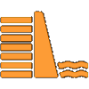
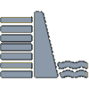

Categoria de risco: indica a possibilidade da ocorrência de
desastre ou outro tipo de falha Dano potencial: indica a intensidade da destruição que pode ser causada por falha da barragem Fiscalização federal: Indica se a construção está incluída na Política Nacional de Segurança de
Barragens (PNSB)
Áreas inundáveis
 Barragem com dados de áreas afetadas
 Barragem sem dados de áreas afetadas